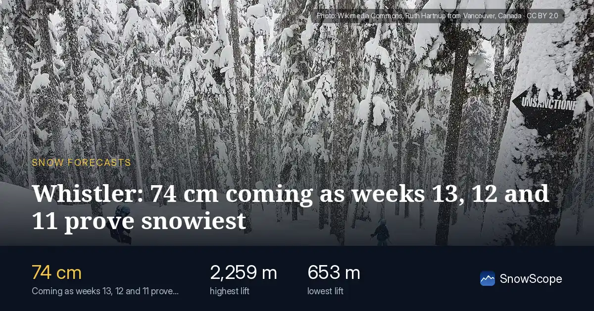
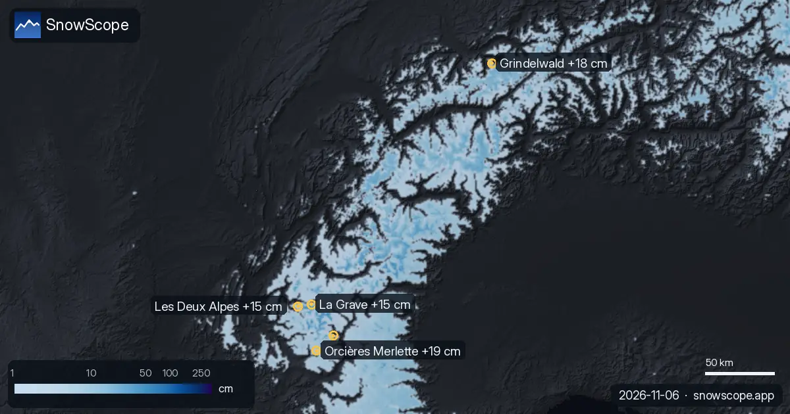
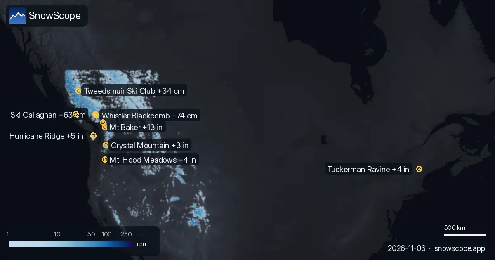
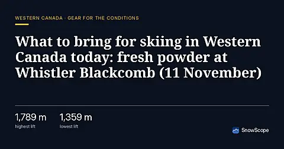

Whistler: 74 cm coming as weeks 13, 12 and 11 prove snowiest
Whistler Blackcomb will see 74 cm of new snow in the next 72 hours, according to a model run on 5 November. Historical data from past winters shows the resort's deepest snow typically falls between weeks 13, 12 and 11.
See the live snow forecast for Whistler Blackcomb in the SnowScope appSnow depth, powder alerts and the 3D map, free.
Global leaders
Whistler Blackcomb sits alone at the top of this week's forecast with 74 cm of snow expected over the next 72 hours. That is more than any other tracked location on Earth right now. Mount Baker in Washington follows second with 13 in (33 cm). In the Alps, Orcières Merlette in France is set for 19 cm; Grindelwald in Switzerland comes next with 18 cm.
These numbers are estimates for the upper slopes of each resort based on our model. The snow line—the height where rain turns to snow—varies by location and will shift as the weather system moves through.
| # | Resort | Region | +24 h | +72 h | Snow line |
|---|---|---|---|---|---|
| 1 | Orcières Merlette | Alps · France | 0 cm | 19 cm | 2,000 m |
| 2 | Grindelwald | Alps · Switzerland | 4 cm | 18 cm | 2,000 m |
| 3 | La Grave | Alps · France | 0 cm | 15 cm | 2,900 m |
| 4 | Les Deux Alpes | Alps · France | 0 cm | 15 cm | 2,300 m |
| 5 | Puy-Saint-Vincent | Alps · France | 0 cm | 15 cm | 2,200 m |
| 6 | Chaillol | Alps · France | 0 cm | 14 cm | 2,200 m |
| 7 | Axalp | Alps · Switzerland | 3 cm | 13 cm | 2,000 m |
| 8 | Alpe d'Huez Grand Domaine | Alps · France | 0 cm | 13 cm | 2,200 m |
| # | Resort | Region | +24 h | +72 h | Snow line |
|---|---|---|---|---|---|
| 1 | Mt Baker | US West · United States | 2 in (6 cm) | 13 in (33 cm) | 8,200 ft (2,500 m) |
| 2 | Hurricane Ridge | US West · United States | 0 in (0 cm) | 5 in (12 cm) | 8,200 ft (2,500 m) |
| 3 | Mt. Hood Meadows | US West · United States | 1 in (3 cm) | 4 in (10 cm) | 11,500 ft (3,500 m) |
| 4 | Tuckerman Ravine | US Northeast · United States | 0 in (0 cm) | 4 in (9 cm) | – |
| 5 | Crystal Mountain | US West · United States | 0 in (1 cm) | 3 in (7 cm) | 10,200 ft (3,100 m) |
| 6 | Ski Eldorado | US Northeast · Canada | 0 in (0 cm) | 3 in (7 cm) | 8,500 ft (2,600 m) |
| 7 | Saddleback Mountain | US Northeast · United States | 0 in (0 cm) | 2 in (6 cm) | 8,900 ft (2,700 m) |
| 8 | Sahalie Ski Club | US West · United States | 0 in (0 cm) | 2 in (6 cm) | 8,900 ft (2,700 m) |
| # | Resort | Region | +24 h | +72 h | Snow line |
|---|---|---|---|---|---|
| 1 | Whistler Blackcomb | Western Canada · Canada | 14 cm | 74 cm | 2,200 m |
| 2 | Ski Callaghan | Western Canada · Canada | 12 cm | 63 cm | 1,800 m |
| 3 | Mount Cain Alpine Park | Western Canada · Canada | 2 cm | 50 cm | 1,800 m |
| 4 | Tweedsmuir Ski Club | Western Canada · Canada | 13 cm | 34 cm | 1,300 m |
| 5 | Sasquatch | Western Canada · Canada | 0 cm | 20 cm | 2,300 m |
| 6 | Mount Washington Alpine Resort | Western Canada · Canada | 0 cm | 19 cm | 2,300 m |
| 7 | Manning Park Resort | Western Canada · Canada | 1 cm | 15 cm | 2,600 m |
| 8 | Kicking Horse Resort | Western Canada · Canada | 4 cm | 14 cm | 2,000 m |

Whistler right now
Right now, Whistler has 41 cm measured at the base station. In a typical early November, skiers would find around 69 cm here. The incoming 74 cm will add significant volume to the snowpack, though it will be spread across different heights.
Snow arriving before Sunday morning will fall above 2200 m, meaning the top of the mountain will collect powder while lower slopes may see rain. This is normal for early season work: the base builds in layers. What matters is that the terrain can open and that skiers can access more runs as the week progresses.

History shows the real peak
But here is the key pattern: past winters show us that Whistler's deepest snow does not arrive in November. The resort's best weeks are weeks 13, 12 and 11 of the year—that is late March, mid-March and early March. This is when the mountains typically see their heaviest accumulations.
Right now, in early November, we are building the base. It is essential work, but skiers planning a trip should know that the snowiest weeks come later in the season. Early November serves a different purpose: getting terrain ready and setting up the layered pack that will support the spring snow that comes in weeks 13, 12 and 11.
North America versus Europe
The contrast between regions is striking this week. Canada and the US Pacific Northwest are receiving heavy snow: Whistler gets 74 cm, Mount Baker 13 in (33 cm), Ski Callaghan 63 cm, and Mount Cain Alpine Park 50 cm. The same system does not reach the Alps with the same force. Orcières Merlette has 19 cm, Grindelwald 18 cm, La Grave 15 cm.
This is typical for early November. The Pacific storm track feeds water vapour to the west coast mountains and brings Atlantic systems to Europe—but late autumn patterns often favour the west. By weeks 13, 12 and 11 in spring, that balance can shift.
Where to focus
If you are heading to Whistler this weekend, focus your day on above 2200 m where the snow will be fresh powder. Lower terrain will be mixed. At Mount Baker, the snow line is 8200 ft (2500 m), so plan accordingly.
Early season snow is usually thin over rocks, so even where new snow has arrived, stay alert and choose slopes you know. SnowScope's depth map shows exactly where the best coverage is at each elevation, updated daily as new forecasts come in.
Why this matters
The coming snow matters for two reasons. First, it opens terrain and builds the foundation of the season. Second, it shows us the timing of the weather systems now arriving.
By weeks 13, 12 and 11, when Whistler historically sees its deepest snow, the same mountain-building systems will likely return—but with more moisture and more time to accumulate. Early season is about reading the mountains and preparing for the peak. This weekend is part of that work.
Tips for skiers
- Whistler's new snow will fall above 2200 m as powder; lower terrain will be wetter. Plan your runs by height using SnowScope.
- At Mount Baker, the snow line is 8200 ft (2500 m). Base terrain will not benefit from this week's forecast. Focus on higher slopes.
- Early season snow often sits over rocks. With 74 cm forecast for Whistler but only 41 cm on the ground now, the base is still thin. Ski familiar terrain.
- Weeks 13, 12 and 11 (March) are historically Whistler's snowiest. This week's 74 cm is building the platform for the peak season.
- Check the official avalanche bulletin if you plan to ski steep backcountry terrain where the new snow is fresh and unsettled.
About these numbers
Resort snow depths are the deepest snow on the resort's upper slopes from the SnowScope snow model (about 1 km, run of 5 November); they are estimates for an area, not a measurement at one point. Station values are measurements on the date shown. Forecasts can change. Always read the official avalanche bulletin before going off-piste.
Official avalanche bulletins: EAWS (Europe) · avalanche.org (US) · Avalanche Canada
Cite this report
For research, teaching or the press: the numbers and charts are free to reuse under CC BY 4.0 with this citation.
SnowScope (2026), Whistler: 74 cm coming as weeks 13, 12 and 11 prove snowiest, https://snowscope.app/blog/en/2026/11/where-most-snow-falls-next-72-hours-6-november-2026.html, accessed 2026-11-06
SnowScope (Atlas Labs). (2026, November 6). Whistler: 74 cm coming as weeks 13, 12 and 11 prove snowiest. SnowScope snow reports. https://snowscope.app/blog/en/2026/11/where-most-snow-falls-next-72-hours-6-november-2026.html
BibTeX
@misc{snowscope2026wheremostsnowfallsnext72,
author = {{SnowScope (Atlas Labs)}},
title = {Whistler: 74 cm coming as weeks 13, 12 and 11 prove snowiest},
year = {2026},
month = nov,
howpublished = {\url{https://snowscope.app/blog/en/2026/11/where-most-snow-falls-next-72-hours-6-november-2026.html}},
note = {Published 2026-11-06 09:39 UTC; accessed 2026-11-06}
}· CC BY 4.0 · Methods, data and tools →
Whistler Blackcomb: snow and temperature by height, this winter vs last (tools) →
Follow Whistler Blackcomb
Free: a message when fresh snow is coming, and the forecast every morning.
More snow reports

Manning Park Resort snow is at 23% of normal for mid-November. Here's what to bring for thin cover and the changing conditions ahead.

Snow is coming in France: up to 87 cm in the week ahead. Snow cover, new snow, resorts and the days ahead in France on 17 November.

Snow on 3 November 2026: Kendall Mountain 53 in (134 cm) after a storm, Big White 91 cm, the Alps up to 55 cm at Bonneval-sur-Arc. Model and station data.